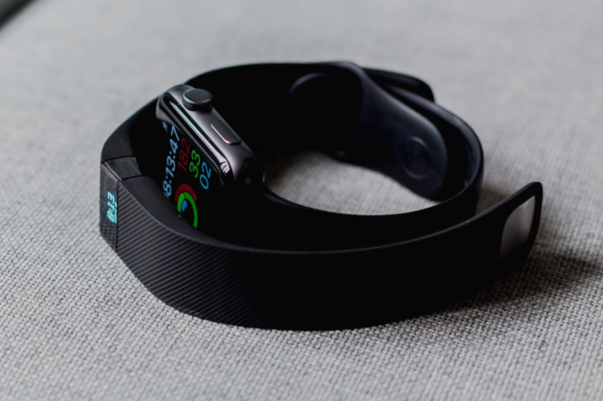

Of all the things I track, one of the most valuable are my workouts. Along with tracking your heart and your sleep, I believe tracking your workouts provides a lot of benefits.
Obviously getting to the gym or just doing your runs is better than sitting on the couch. Getting moving is the most important step, but if you want to be more efficient (or even data-driven), tracking your workouts is critical.
Personally, tracking was a big part of my journey from barely managing a 5k run to completing my first marathon. I found tracking my workouts to be helpful part of staying on the program and seeing my progress. From a data perspective I could look to my logs to see how much faster I got and how much more capable I was on longer runs.
But also in my workout log, I was keeping a journal. I recorded the high’s and low’s, the challenges and the achievements. My workout log also helped me realize my weakness and adjustment my plans accordingly. Mentally my workout journal was a way to think through the process. Overall, tracking my workouts has provided a multiplier to my fitness growth.
Before we dig into the how of workout tracking and some of the data you might use to understand your health and fitness in a later post, it’s important to first ask: Why? Why track your workouts?
Why You Should Track Your Workouts
Firstly, logging your workouts holds you accountable and honest. Your workout logs reveal either a positive pattern or a negative avoidance. You are doing the workouts and showing commitment or you are not.
Second, tracking your workouts make your purpose-driven and more efficient. Workouts need to have a goal or purpose. Whether it’s about getting strong or improving your endurance, a workout log is an important component to the planning, organizing, actualizing and understanding of your fitness and life goals. When you have a purpose and goal, your workouts become more efficient too. Each workout should be about improving something.
Third, tracking your workouts provides a clear measurement towards completing your goals. As the classic quote goes, if you don’t measure it, you can’t improvement. Whether it’s an endurance sport like cycling or running, weight lifting or just getting moving, tracking your workouts provides a portrait into the progress you are making towards running faster, cycling longer, lifting more or whatever.
Fourth, tracking your workouts summarizes your progress and lets your know exactly what you’ve done. Your logs tell your how long you ran and how fast. It tells your how much you lift and which exercises you did. It only counts if you show up. Your workout logs don’t lie.
Fifth, tracking your workouts isn’t just about the workout; it’s also about your story. You can track more than just the workout info. You can record how you felt, both positive and negative. It can be your fitness- or health-focus story and provide a form of self-talk too. I often log my workouts along with a short journal entry.
Sixth, tracking your workouts provides you with health data. The data you collect helps you check on your progress and understand how you are performing and improving. Whether it’s your active heart rate, intensity or weight lifting, your workout data provides a way to accelerate. your health and fitness improvements
Conclusion: Habits and Tracking
There are a lot of benefits to tracking your workouts. To summarize: you get accountability, honesty, purpose, measurements, a summary of progress and health data.
Whatever activity you do to stay active, you can track it to stay committed and leverage your tracked data to learn and optimize your fitness. Your workout log makes it black and white if you are staying healthy or not.
Personally I’m extremely dedicated to tracking my life and tracking my workouts is one of the key areas I continue to track. Workout tracking first started with tracking my running sessions with RunKeeper, but, as I got more into Marathon Training, Heart Rate Zones and Heart Rate Variability, my workout tracking expanded to cover tracking everything related to my training, including my running, cycling, strength training, swimming and even my mobility and stretching sessions.
The first aspect to improving your health and fitness is building a good habit. Doing the workouts matter more than tracking them.
As a rather obsessive self-tracker, tracking my workouts helps me reinforce a good habit and is part of the pre- and post-game to my fitness routine. Tracking my workouts also gives me a wealth of data for understanding where I am improving and where I have room for improvement.
Ultimately, the basic value of tracking your workouts is to know your health and improving your performance. As a data geek, I love obsessing about the data. Beyond the benefits of tracking, workout logs can bring numerous comparative data points, like how fast you can run at a certain heart rate or your max for weight lifting. Combining the data with research-validating training routines can help you make bigger and faster gains!
Good luck and happy tracking!
Article credit: Mark Koester / CC BY
Cover photo: Andres Urena